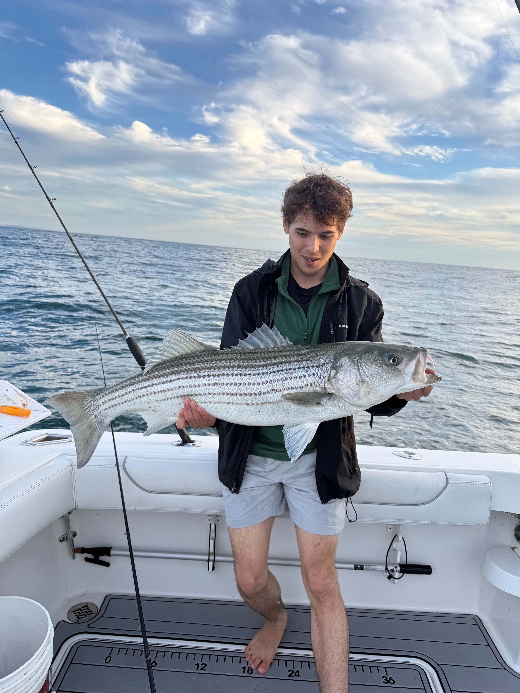

Our story
Point Judith, Rhode Island
The Fleet started the way most good things on the water do. A group of friends who couldn't stay off the ocean. What began as chasing fish on weekends turned into running real trips for anyone who wants in.
We run a ton fishing trips and love sharing the experience. More than that, we're about bringing people into an outdoor life. Getting folks off the couch and onto the water, whether that's your first striper or your hundredth tuna.
The boats
Our 2012 Sea Hunt 21 is the nimble inshore workhorse of the fleet. This center console is built for skinny water and tight runs around Point Judith and Block Island Sound — perfect for first-light striper, bluefish blitzes, and quick shellfishing trips. Easy to fish, fast to the grounds, and ideal for small groups who want to stay close and stay on fish.
Book this boat →The 2006 Edgewater 26 is our do-it-all mid-range boat. With a deep, dry ride and rock-solid Edgewater unsinkable hull, she handles a sloppy chop with ease and bridges the gap between inshore and offshore. Great for longer striper runs, shark trips, and pushing out to the edge when the bite calls for it — comfortable for a full day on the water.
Book this boat →The 2018 Albemarle 29 Express is our bluewater battlewagon. A true offshore sportfisher with a sharp entry and serious range, she's built to run to the canyons for yellowfin, bluefin and mahi, and to fight big game when the sharks push in. Cabin comfort for the long haul out and the firepower to back it up when the rods go off.
Book this boat →
How we run it
People who know these waters putting you on fish and making sure you have a day worth remembering. We bring the gear and the know-how — you bring the energy.
Come fish with us →